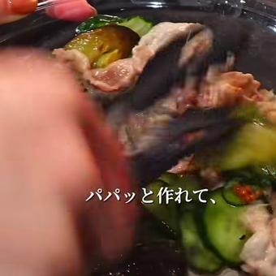
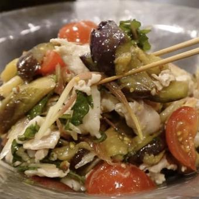

タンパク質は約65℃を超えると急に締まって硬くなる。余熱だけで火を通すと、しっとり柔らかいまま。
急冷すると脂が白く固まり、口当たりと香りが落ちる。常温で冷ませば脂がなめらかなまま。
浸透圧で水分を抜くと食感が締まり、抜けた分だけタレが入る。和える前の「受け皿づくり」。
茄子のスポンジ構造は油を抱くと甘みと質感が化ける。淡白な冷しゃぶに「コクの層」を足す担当。
ごまの香ばしさとにんにく・生姜の立ち上がり。冷たい温度が輪郭をシャープにする。
柔らかい豚の脂の甘み → トロトロ茄子のコクが重なり、酢が全体を引き締めて重さを消す。
塩もみ胡瓜のパリッとした食感がリズムを刻み、最後に茗荷の清涼な香りが鼻に抜ける。
No.001の「火を消す」と同じ狙いの別解。グラグラ煮立てないから肉が締まらない。酒は臭み消し＋ほのかな旨みの下支え。
一気に冷える＋溶けた水で濃度がちょうどよくなる二段設計。白だし大2はこの希釈込みの濃さ。冷たい料理は温度そのものが調味料。
白だしの旨みベースに、米酢のまろやかな酸とオイルのコクを重ねる。醤油系より色が薄く、素材の色が映えてワインにも合う設計。
液体の酸（米酢）が面で効くのに対して、粒マスタードはプチッと弾けて点で効く。同じ酸でも役割が違う。
味の浸透と温度の安定。作ってすぐより一体感が出る。逆算すれば「先に作っておける」おもてなし向き構造。
キリッと冷えた白だしの旨みと米酢の柔らかい酸。No.001より澄んだ、上品な立ち上がり。
オリーブオイルを吸ったナスのコク、豚の甘み。ときどき粒マスタードがプチッと弾けて酸の点を打ち、黒胡椒がキレを足す。
大葉とミョウガの香りが涼しく抜けて、口の中がリセットされる。次のひと口と白ワインを呼ぶ余韻。
| 001 薬味だれ | 002 白だしマスタード | |
| 方向性 | ごま×コチュジャンのパンチ。ご飯・ビール向き | 白だし×酸の透明感。白ワイン向き |
| 火入れ | 火を消してから肉IN | 沸騰直前・弱火＋酒 |
| 冷やし方 | 常温冷ましのみ | 常温冷まし＋氷でタレごと急冷 |
| 共通原理 | 低温火入れ／冷水NG／茄子×油／薬味の香りで締める | |